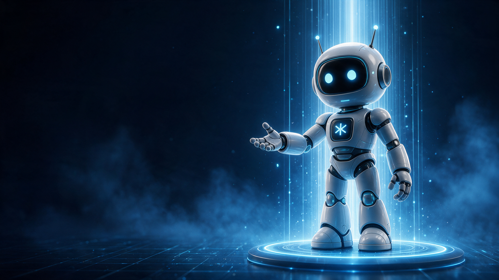

WhatsApp · 11:48 p. m.“¿Tienen cita mañana temprano?”Ejemplo ilustrativo · caso real: de 8 min a 12 s, clínica dental, Monterrey
Agencia de IA · Guadalajara, MX
Diseñamos e implementamos el sistema que atiende, califica y agenda por ti, 24/7, y lo operamos junto con tu equipo.
30 min · 1:1 · Google Meet · sin costo
Partner oficial de Kommo en LATAM · +73 sistemas en producción · 7 países